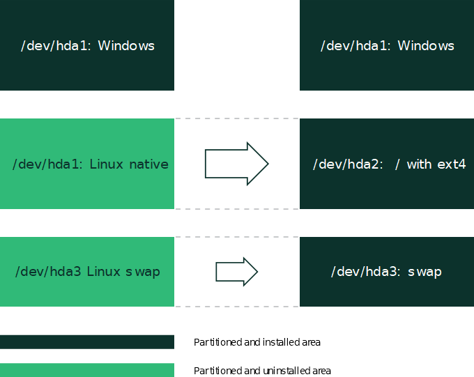

4.6. Partitioning
When it comes to partitioning, we can categorize AutoYaST use cases into three different levels:
-
Automatic partitioning. The user does not care about the partitioning and trusts in AutoYaST to do the right thing.
-
Guided partitioning. The user wants to set some basic settings. For example, a user wants to use LVM but has no idea about how to configure partitions, volume groups, and so on.
-
Expert partitioning. The user specifies how the layout should look. However, a complete definition is not required, and AutoYaST should propose reasonable defaults for missing parts.
To some extent, it is like using the regular installer. You can skip the partitioning screen and trust in YaST, use the , or define the partitioning layout through the .
4.6.1. Automatic partitioning
AutoYaST can come up with a sensible partitioning layout without any user indication.
Although it depends on the selected product to install, AutoYaST usually proposes
a Btrfs root file system, a separate /home using XFS and a swap partition. Additionally, depending on the architecture, it adds
any partition that might be needed to boot (like BIOS GRUB partitions).
However, these defaults might change depending on factors like the available disk
space. For example, having a separate /home depends on the amount of available disk space.
If you want to influence these default values, you can use the approach described in the section called “Guided partitioning”.
4.6.2. Guided partitioning
Although AutoYaST can come up with a partitioning layout without any user indication, sometimes it is useful to set some generic parameters and let AutoYaST do the rest. For example, you may be interested in using LVM or encrypting your file systems without having to deal with the details. It is similar to what you would do when using the guided proposal in a regular installation.
The storage section in Example 4.3, “LVM-based guided partitioning” instructs AutoYaST to set up a partitioning layout using LVM and deleting all Windows
partitions, no matter whether they are needed.
<general><storage><proposal><lvm config:type="boolean">true</lvm><windows_delete_mode config:type="symbol">all</windows_delete_mode></proposal></storage></general>
- lvm
-
Creates an LVM-based proposal. The default is
false.<lvm config:type="boolean">true</lvm> - lvm_vg_reuse
-
Tells the installer whether an existing LVM should be reused in the proposal. The default is
true.<lvm_vg_reuse config:type="boolean">false</lvm_vg_reuse> - resize_windows
-
When set to
true, AutoYaST resizes Windows partitions if needed to make room for the installation.<resize_windows config:type="boolean">false</resize_windows> - windows_delete_mode
-
-
nonedoes not remove Windows partitions. -
ondemandremoves Windows partitions if needed. -
allremoves all Windows partitions.
<windows_delete_mode config:type="symbol">ondemand</windows_delete_mode> -
- linux_delete_mode
-
-
nonedoes not remove Linux partitions. -
ondemandremoves Linux partitions if needed. -
allremoves all Linux partitions.
<linux_delete_mode config:type="symbol">ondemand</linux_delete_mode> -
- other_delete_mode
-
-
nonedoes not remove other partitions. -
ondemandremoves other partitions if needed. -
allremoves all other partitions.
<other_delete_mode config:type="symbol">ondemand</other_delete_mode> -
- encryption_password
-
Enables encryption using the specified password. By default, encryption is disabled.
<encryption_password>some-secret</encryption_password>
4.6.3. Expert partitioning
As an alternative to guided partitioning, AutoYaST allows to describe the partitioning
layout through a partitioning section. However, AutoYaST does not need to know every single detail and can build
a sensible layout from a rather incomplete specification.
The partitioning section is a list of drive elements. Each of these sections describes an element of the partitioning layout
like a disk, an LVM volume group, a RAID, a multi-device Btrfs file system, and so
on.
Example 4.4, “Creating /, /home and swap partitions”, asks AutoYaST to create a /, a /home and a swap partition using the whole disk. Note that some information is missing, like which
file systems each partition should use. However, that is not a problem, and AutoYaST
will propose sensible values for them.
<partitioning config:type="list"><drive><use>all</use><partitions config:type="list"><partition><mount>/</mount><size>20GiB</size></partition><partition><mount>/home</mount><size>max</size></partition><partition><mount>swap</mount><size>1GiB</size></partition></partitions></drive><partitioning>
/, /home and swap partitionsAutoYaST checks whether the layout described in the profile is bootable or not. If it is not, it adds the missing partitions. So, if you are unsure about which partitions are needed to boot, you can rely on AutoYaST to make the right decision.
4.6.3.1. Drive configuration
The elements listed below must be placed within the following XML structure:
<profile><partitioning config:type="list"><drive>...</drive></partitioning></profile>
- device
-
Optional, the device you want to configure. If left out, AutoYaST tries to guess the device. See Skipping devices on how to influence guessing.
If set to
ask, AutoYaST will ask the user which device to use during installation.You can use persistent device names via ID, like
/dev/disk/by-id/ata-WDC_WD3200AAKS-75L9or by-path, like/dev/disk/by-path/pci-0001:00:03.0-scsi-0:0:0:0.<device>/dev/sda</device>In case of volume groups, software RAID or
bcachedevices, the name in the installed system may be different (to avoid clashes with existing devices).See the section called “Multipath support” for further information about dealing with multipath devices.
- initialize
-
Optional, the default is
false. If set totrue, the partition table is wiped out before AutoYaST starts the partition calculation.<initialize config:type="boolean">true</initialize> - partitions
-
Optional, a list of
<partition>entries (see the section called “Partition configuration”).<partitions config:type="list"><partition>...</partition>...</partitions>If no partitions are specified, AutoYaST will create a reasonable partitioning layout (see the section called “Filling the gaps”).
- pesize
-
Optional, for LVM only. The default is 4M for LVM volume groups.
<pesize>8M</pesize> - use
-
Recommended, specifies the strategy AutoYaST will use to partition the hard disk. Choose from:
all, uses the whole device while calculating the new partitioning.linux, only existing Linux partitions are used.free, only unused space on the device is used, no existing partitions are touched.1,2,3, a list of comma-separated partition numbers to use.
- type
-
Optional, specifies the type of the
drive. The default isCT_DISKfor a normal physical hard disk. The following is a list of all options:CT_DISKfor physical hard disks (default).CT_LVMfor LVM volume groups.CT_MDfor software RAID devices.CT_DMMULTIPATHfor Multipath devices (deprecated, implied with CT_DISK).CT_BCACHEfor softwarebcachedevices.CT_BTRFSfor multi-device Btrfs file systems.CT_NFSfor NFS.CT_TMPFSfortmpfsfile systems.<type config:type="symbol">CT_LVM</type> - disklabel
-
Optional. By default YaST decides what makes sense. If a partition table of a different type already exists, it will be re-created with the given type only if it does not include any partition that should be kept or reused. To use the disk without creating any partition, set this element to
none. The following is a list of all options:msdosgptnone<disklabel>gpt</disklabel> - keep_unknown_lv
-
Optional, the default is
false.This value only makes sense for type=CT_LVM drives. If you are reusing a logical volume group and you set this to
true, all existing logical volumes in that group will not be touched unless they are specified in the <partitioning> section. So you can keep existing logical volumes without specifying them.<keep_unknown_lv config:type="boolean">false</keep_unknown_lv> - enable_snapshots
-
Optional, the default is
true.Enables snapshots on Btrfs file systems mounted at
/(does not apply to other file systems, or Btrfs file systems not mounted at/).<enable_snapshots config:type="boolean">false</enable_snapshots> - quotas
-
Optional, the default is
false.Enables support for Btrfs subvolume quotas. Setting this element to
truewill enable support for quotas for the file system. However, you need to set the limits for each subvolume. Check the section called “Btrfs subvolumes” for further information.<quotas config:type="boolean">true</quotas>
The value provided in the use property determines how existing data and partitions are treated. The value all means that the entire disk will be erased. Make backups and use the confirm property if you need to keep some partitions with important data. Otherwise, no pop-ups
will notify you about partitions being deleted.
You can influence AutoYaST's device-guessing for cases where you do not specify a <device> entry on your own. Usually AutoYaST would use the first device it can find that looks reasonable but you can configure it to skip some devices like this:
<partitioning config:type="list"><drive><initialize config:type="boolean">true</initialize><skip_list config:type="list"><listentry><!-- skip devices that use the usb-storage driver --><skip_key>driver</skip_key><skip_value>usb-storage</skip_value></listentry><listentry><!-- skip devices that are smaller than 1GB --><skip_key>size_k</skip_key><skip_value>1048576</skip_value><skip_if_less_than config:type="boolean">true</skip_if_less_than></listentry><listentry><!-- skip devices that are larger than 100GB --><skip_key>size_k</skip_key><skip_value>104857600</skip_value><skip_if_more_than config:type="boolean">true</skip_if_more_than></listentry></skip_list></drive></partitioning>
For a list of all possible <skip_key>s, run yast2 ayast_probe on a system that has already been installed.
4.6.3.2. Partition configuration
The elements listed below must be placed within the following XML structure:
<drive><partitions config:type="list"><partition>...</partition></partitions></drive>
- create
-
Specify if this partition or logical volume must be created, or if it already exists. If set to
false, you also need to set one ofpartition_nr,lv_name,label, oruuidto tell AutoYaST which device to use.<create config:type="boolean">false</create> - crypt_method
-
Optional, the partition will be encrypted using one of these methods:
-
luks1: regular LUKS1 encryption. -
luks2: regular LUKS2 encryption. -
pervasive_luks2: pervasive volume encryption. -
protected_swap: encryption with volatile protected key. -
secure_swap: encryption with volatile secure key. -
random_swap: encryption with volatile random key.
<crypt_method config:type="symbol">luks1</crypt_method>Encryption method selection was introduced in SUSE Linux Enterprise Server 15 SP2. To mimic the behavior of previous versions, use
luks1.See
crypt_keyelement to learn how to specify the encryption password if needed.When using regular LUKS encryption, it is possible to customize several aspects of the encryption using
crypt_pbkdf,crypt_cipherorcrypt_key_size, depending on the exact variant of LUKS that is used. Keep in mind that the encryption method and its corresponding settings may dramatically affect the amount of RAM needed to complete the installation process. Using regular LUKS2 with default parameters typically means that several gigabytes of RAM are needed in the system in order to encrypt the devices. -
- crypt_fs
-
Partition will be encrypted, the default is
false. This element is deprecated. Usecrypt_methodinstead.<crypt_fs config:type="boolean">true</crypt_fs> - crypt_key
-
Required if
crypt_methodhas been set to a method that requires a password (that is,luks1,luks2orpervasive_luks2).<crypt_key>xxxxxxxx</crypt_key> - crypt_cipher
-
Cipher used for LUKS encryption. This value is only honored if the value of
crypt_methodisluks1orluks2. The format and value of the string must be compatible with the--cipherargument of the commandcryptsetup. You can find compatible ciphers in/proc/crypto.<crypt_cipher>aes-xts-plain64</crypt_cipher> - crypt_key_size
-
Key size, in bits, used for LUKS encryption. This value is only honored if the value of
crypt_methodisluks1orluks2. The value has to be a multiple of 8. The possible key sizes are limited by the used cipher.<crypt_key_size config:type="integer">256</crypt_key_size> - crypt_pbkdf
-
Password-based key derivation function used for LUKS2 encryption. This is only relevant if the
crypt_methodisluks2. The possible values arepbkdf2,argon2iandargon2id. If omitted, the device will be encrypted using the default function of the commandcryptsetup. Note that both variants of Argon2 are designed to intentionally consume a large amount of memory during the encryption process. Using any of those functions or omitting this setting (which will likely result in the usage of Argon2) means that more RAM is needed to complete the installation process compared to a non-encrypted setup.<crypt_pbkdf config:type="symbol">argon2id</crypt_pbkdf> - crypt_label
-
LUKS label for the encrypted device. This is only relevant if the
crypt_methodisluks2.<crypt_label>crypt_home</crypt_label> - mount
-
You should have at least a root partition (/) and a swap partition.
<mount>/</mount><mount>swap</mount> - fstopt
-
Mount options for this partition; see
man mountfor available mount options.<fstopt>ro,noatime,user,data=ordered,acl,user_xattr</fstopt> - label
-
The label of the partition. Useful when formatting the device (especially if the
mountbyparameter is set tolabel) and for identifying a device that already exists (seecreateabove). Seeman e2labelfor an example.<label>mydata</label> - uuid
-
The uuid of the partition. Only useful for identifying an existing device (see
createabove). The uuid cannot be enforced for new devices. (Seeman uuidgen.)<uuid>1b4e28ba-2fa1-11d2-883f-b9a761bde3fb</uuid> - size
-
The size of the partition, for example 4G, 4500M, etc. The /boot partition and the swap partition can have
autoas size. Then AutoYaST calculates a reasonable size. One partition can have the valuemaxto use all remaining space.You can also specify the size in percentage. So 10% will use 10% of the size of the hard disk or volume group. You can mix
auto,max,size, and percentage as you like.<size>10G</size>Starting with SUSE Linux Enterprise Server 15, all values (including
autoandmax) can be used for resizing partitions as well. - format
-
Specify if AutoYaST should format the partition. If you set
createtotrue, then you likely want this option set totrueas well.<format config:type="boolean">false</format> - file system
-
Optional. The default is
btrfsfor the root partition (/) andxfsfor data partitions. Specify the file system to use on this partition:-
btrfs -
ext2 -
ext3 -
ext4 -
fat -
xfs -
swap<filesystem config:type="symbol">ext3</filesystem>
-
- mkfs_options
-
Optional, specify an option string for the
mkfs. Only use this when you know what you are doing. (See the relevant mkfs man page for the file system you want to use.)<mkfs_options>-I 128</mkfs_options> - partition_nr
-
The number of this partition. If you have set
create=falseor if you use LVM, then you can specify the partition viapartition_nr.<partition_nr config:type="integer">2</partition_nr> - partition_id
-
The
partition_idsets the id of the partition. If you want different identifiers than 131 for Linux partition or 130 for swap, configure them withpartition_id.The default is131for a Linux partition and130for swap.<partition_id config:type="integer">131</partition_id>FAT16 (MS-DOS):6NTFS (MS-DOS):7FAT32 (MS-DOS):12Extended FAT16 (MS-DOS):15DIAG, Diagnostics and firmware (MS-DOS, GPT):18PPC PReP Boot partition (MS-DOS, GPT):65Swap (MS-DOS, GPT, DASD, implicit):130Linux (MS-DOS, GPT, DASD):131Intel Rapid Start Technology (MS-DOS, GPT):132LVM (MS-DOS, GPT, DASD):142EFI System Partition (MS-DOS, GPT):239MD RAID (MS-DOS, GPT, DASD):253BIOS boot (GPT):257Windows basic data (GPT):258EFI (GPT):259Microsoft reserved (GPT):261 - partition_type
-
Optional. Allowed value is
primary. When using anmsdospartition table, this element sets the type of the partition toprimary. This value is ignored when using agptpartition table, because such a distinction does not exist in that case.<partition_type>primary</partition_type> - mountby
-
Instead of a partition number, you can tell AutoYaST to mount a partition by
device,label,uuid,pathorid, which are the udev path and udev id (see/dev/disk/...).See
labelanduuiddocumentation above. The default depends on YaST and usually isid.<mountby config:type="symbol">label</mountby> - subvolumes
-
List of subvolumes to create for a file system of type Btrfs. This key only makes sense for file systems of type Btrfs. (See the section called “Btrfs subvolumes” for more information.)
If no
subvolumessection has been defined for a partition description, AutoYaST will create a predefined set of subvolumes for the given mount point.<subvolumes config:type="list"><path>tmp</path><path>opt</path><path>srv</path><path>var</path>...</subvolumes> - create_subvolumes
-
Determine whether Btrfs subvolumes should be created or not. It is set to
trueby default. When set tofalse, no subvolumes will be created. - subvolumes_prefix
-
Set the Btrfs subvolumes prefix name. If no prefix is wanted, it must be set to an empty value:
<subvolumes_prefix><![CDATA[]]></subvolumes_prefix>It is set to
@by default. - lv_name
-
If this partition is on a logical volume in a volume group, specify the logical volume name here (see the
typeparameter in the drive configuration).<lv_name>opt_lv</lv_name> - stripes
-
An integer that configures LVM striping. Specify across how many devices you want to stripe (spread data).
<stripes config:type="integer">2</stripes> - stripesize
-
Specify the size of each block in KB.
<stripesize config:type="integer">4</stripesize> - lvm_group
-
If this is a physical partition used by (part of) a volume group (LVM), you need to specify the name of the volume group here.
<lvm_group>system</lvm_group> - pool
-
poolmust be set totrueif the LVM logical volume should be an LVM thin pool.<pool config:type="boolean">true</pool> - used_pool
-
The name of the LVM thin pool that is used as a data store for this thin logical volume. If this is set to something non-empty, it implies that the volume is a so-called thin logical volume.
<used_pool>my_thin_pool</used_pool> - raid_name
-
If this physical volume is part of a RAID array, specify the name of the RAID array.
<raid_name>/dev/md/0</raid_name> - raid_options
-
Specify RAID options. Setting the RAID options at the
partitionlevel is deprecated. See the section called “Software RAID”. - bcache_backing_for
-
If this device is used as a
bcachebacking device, specify the name of thebcachedevice. See the section called “bcacheconfiguration” for further details.<bcache_backing_for>/dev/bcache0</bcache_backing_for> - bcache_caching_for
-
If this device is used as a
bcachecaching device, specify the names of thebcachedevices. See the section called “bcacheconfiguration” for further details.<bcache_caching_for config:type="list"><listentry>/dev/bcache0</listentry></bcache_caching_for> - resize
-
Starting with SUSE Linux Enterprise Server 15 resizing works with physical disk partitions and with LVM volumes
<resize config:type="boolean">false</resize>
4.6.3.3. Btrfs subvolumes
As mentioned in the section called “Partition configuration”, it is possible to define a set of subvolumes for each Btrfs file system. In its simplest form, they are specified using a list of paths:
<subvolumes config:type="list"><path>usr/local</path><path>tmp</path><path>opt</path><path>srv</path><path>var</path></subvolumes>
However, it is possible to specify additional settings for each subvolume. For example, we might want to set a quota or to disable the copy-on-write mechanism. For that purpose, it is possible to expand any of the elements of the list as shown in the example below:
<subvolumes config:type="list"><listentry>usr/local</listentry><listentry><path>tmp</path><referenced_limit>1 GiB</referenced_limit></listentry><listentry>opt</listentry><listentry>srv</listentry><listentry><path>var/lib/pgsql</path><copy_on_write config:type="boolean">false</copy_on_write></listentry></subvolumes>
-
path -
Mount point for the subvolume.
<path>tmp</tmp>Required. AutoYaST will ignore the subvolume if the
pathis not specified. -
copy-on-write -
Whether copy-on-write should be enabled for the subvolume.
<copy-on-write config:type="boolean">false</copy-on-write>Optional. The default value is
false. -
referenced_limit -
Set a quota for the subvolume.
<referenced_limit>1 GiB</referenced_limit>Optional. The default value is
unlimited. Btrfs supports two kinds of limits:referencedandexclusive. At this point, only the former is supported.
If there is a default subvolume used for the distribution (for example @ in SUSE Linux Enterprise Server), the name of this default subvolume is automatically prefixed to the names of the
defined subvolumes. This behavior can be disabled by setting the subvolumes_prefix in the the section called “Drive configuration” section.
<subvolumes_prefix><![CDATA[]]></subvolumes_prefix>4.6.3.4. Using the whole disk
AutoYaST allows to use a whole disk without creating any partition by setting the
disklabel to none as described in the section called “Drive configuration”. In such cases, the configuration in the first partition from the drive will be applied to the whole disk.
In the example below, we are using the second disk (/dev/sdb) as the /home file system.
<partitioning config:type="list"><drive><device>/dev/sda</device><partitions config:type="list"><partition><create config:type="boolean">true</create><format config:type="boolean">true</format><mount>/</mount><size>max</size></partition></partitions></drive><drive><device>/dev/sdb</device><disklabel>none</disklabel><partitions config:type="list"><partition><format config:type="boolean">true</format><mount>/home</mount></partition></partitions></drive>
In addition, the whole disk can be used as an LVM physical volume or as a software RAID member. See the section called “Logical volume manager (LVM)” and the section called “Software RAID” for further details about setting up an LVM or a software RAID.
For backward compatibility reasons, it is possible to achieve the same result by setting
the <partition_nr> element to 0. However, this usage of the <partition_nr> element is deprecated from SUSE Linux Enterprise Server 15.
4.6.3.5. Filling the gaps
When using the approach, AutoYaST can create a partition plan from a rather incomplete profile. The following profiles show how you can describe some details of the partitioning layout and let AutoYaST do the rest.
The following is an example of a single drive system, which is not pre-partitioned and should be automatically partitioned according to the described pre-defined partition plan. If you do not specify the device, it will be automatically detected.
<partitioning config:type="list"><drive><device>/dev/sda</device><use>all</use></drive></partitioning>
A more detailed example shows how existing partitions and multiple drives are handled.
<partitioning config:type="list"><drive><device>/dev/sda</device><use>all</use><partitions config:type="list"><partition><mount>/</mount><size>10G</size></partition><partition><mount>swap</mount><size>1G</size></partition></partitions></drive><drive><device>/dev/sdb</device><use>free</use><partitions config:type="list"><partition><filesystem config:type="symbol">ext4</filesystem><mount>/data1</mount><size>15G</size></partition><partition><filesystem config:type="symbol">xfs</filesystem><mount>/data2</mount><size>auto</size></partition></partitions></drive></partitioning>
4.6.4. Advanced partitioning features
4.6.4.1. Wipe out partition table
Usually this is not needed because AutoYaST can delete partitions one by one automatically. But you need the option to let AutoYaST clear the partition table instead of deleting partitions individually.
Go to the drive section and add:
<initialize config:type="boolean">true</initialize>With this setting AutoYaST will delete the partition table before it starts to analyze the actual partitioning and calculates its partition plan. Of course this means, that you cannot keep any of your existing partitions.
4.6.4.2. Mount options
By default a file system to be mounted is identified in /etc/fstab by the device name. This identification can be changed so the file system is found
by searching for a UUID or a volume label. Note that not all file systems can be mounted
by UUID or a volume label. To specify how a partition is to be mounted, use the mountby property which has the symbol type. Possible options are:
-
device(default) -
label -
UUID
If you choose to mount a new partition using a label, use the label property to specify its value.
Add any valid mount option in the fourth field of /etc/fstab. Multiple options are separated by commas. Possible fstab options:
- Mount read-only (
ro) -
No write access to the file system. Default is
false. - No access time (
noatime) -
Access times are not updated when a file is read. Default is
false. - Mountable by user (
user) -
The file system can be mounted by a normal user. Default is
false. - Data Journaling Mode (
ordered,journal,writeback) -
-
journal -
All data is committed to the journal prior to being written to the main file system.
-
ordered -
All data is directly written to the main file system before its metadata is committed to the journal.
-
writeback -
Data ordering is not preserved.
-
- Access control list (
acl) -
Enable access control lists on the file system.
- Extended user attributes (
user_xattr) -
Allow extended user attributes on the file system.
<partitions config:type="list"><partition><filesystem config:type="symbol">ext4</filesystem><format config:type="boolean">true</format><fstopt>ro,noatime,user,data=ordered,acl,user_xattr</fstopt><mount>/local</mount><mountby config:type="symbol">uuid</mountby><partition_id config:type="integer">131</partition_id><size>10G</size></partition></partitions>
Different file system types support different options. Check the documentation carefully before setting them.
4.6.4.3. Keeping specific partitions
In some cases you should leave partitions untouched and only format specific target partitions, rather than creating them from scratch. For example, if different Linux installations coexist, or you have another operating system installed, likely you do not want to wipe these out. You may also want to leave data partitions untouched.
Such scenarios require specific knowledge about the target systems and hard disks. Depending on the scenario, you might need to know the exact partition table of the target hard disk with partition IDs, sizes and numbers. With this data, you can tell AutoYaST to keep certain partitions, format others and create new partitions if needed.
The following example will keep partitions 1, 2 and 5 and delete partition 6 to create two new partitions. All remaining partitions will only be formatted.
<partitioning config:type="list"><drive><device>/dev/sdc</device><partitions config:type="list"><partition><create config:type="boolean">false</create><format config:type="boolean">true</format><mount>/</mount><partition_nr config:type="integer">1</partition_nr></partition><partition><create config:type="boolean">false</create><format config:type="boolean">false</format><partition_nr config:type="integer">2</partition_nr><mount>/space</mount></partition><partition><create config:type="boolean">false</create><format config:type="boolean">true</format><filesystem config:type="symbol">swap</filesystem><partition_nr config:type="integer">5</partition_nr><mount>swap</mount></partition><partition><format config:type="boolean">true</format><mount>/space2</mount><size>5G</size></partition><partition><format config:type="boolean">true</format><mount>/space3</mount><size>max</size></partition></partitions><use>6</use></drive></partitioning>
The last example requires exact knowledge of the existing partition table and the partition numbers of those partitions that should be kept. In some cases however, such data may not be available, especially in a mixed hardware environment with different hard disk types and configurations. The following scenario is for a system with a non-Linux OS with a designated area for a Linux installation.

In this scenario, shown in figure Figure 4.1, “Keeping partitions”, AutoYaST will not create new partitions. Instead it searches for certain partition types on the system and uses them according to the partitioning plan in the control file. No partition numbers are given in this case, only the mount points and the partition types (additional configuration data can be provided, for example file system options, encryption and file system type).
<partitioning config:type="list"><drive><partitions config:type="list"><partition><create config:type="boolean">false</create><format config:type="boolean">true</format><mount>/</mount><partition_id config:type="integer">131</partition_id></partition><partition><create config:type="boolean">false</create><format config:type="boolean">true</format><filesystem config:type="symbol">swap</filesystem><partition_id config:type="integer">130</partition_id><mount>swap</mount></partition></partitions></drive></partitioning>
When AutoYaST is probing the storage devices, the partitioning section from the profile is not yet analyzed. In some scenarios, it is not clear which key should be used to unlock a device. For example, this can happen when more than one encryption key is defined. To solve this problem, AutoYaST will try all defined keys on all encrypted devices until a working key is found.
4.6.5. Logical volume manager (LVM)
To configure LVM, first create a physical volume using the normal partitioning method described above.
The following example shows how to prepare for LVM in the partitioning resource. A non-formatted partition is created on device /dev/sda1 of the type LVM and with the volume group system. This partition will use all space available on the drive.
<partitioning config:type="list"><drive><device>/dev/sda</device><partitions config:type="list"><partition><create config:type="boolean">true</create><lvm_group>system</lvm_group><partition_type>primary</partition_type><partition_id config:type="integer">142</partition_id><partition_nr config:type="integer">1</partition_nr><size>max</size></partition></partitions><use>all</use></drive></partitioning>
<partitioning config:type="list"><drive><device>/dev/sda</device><partitions config:type="list"><partition><lvm_group>system</lvm_group><partition_type>primary</partition_type><size>max</size></partition></partitions><use>all</use></drive><drive><device>/dev/system</device><type config:type="symbol">CT_LVM</type><partitions config:type="list"><partition><filesystem config:type="symbol">ext4</filesystem><lv_name>user_lv</lv_name><mount>/usr</mount><size>15G</size></partition><partition><filesystem config:type="symbol">ext4</filesystem><lv_name>opt_lv</lv_name><mount>/opt</mount><size>10G</size></partition><partition><filesystem config:type="symbol">ext4</filesystem><lv_name>var_lv</lv_name><mount>/var</mount><size>1G</size></partition></partitions><pesize>4M</pesize><use>all</use></drive></partitioning>
It is possible to set the size to max for the logical volumes. Of course, you can only use max for one(!) logical volume. You cannot set two logical volumes in one volume group
to max.
4.6.6. Software RAID
The support for software RAID devices has been greatly improved in SUSE Linux Enterprise Server 15 SP2.
If needed, see the section called “Using the deprecated syntax” to find out further details about the old way of specifying a software RAID, which is still supported for backward compatibility.
Using AutoYaST, you can create and assemble software RAID devices. The supported RAID levels are the following:
- RAID 0
-
This level increases your disk performance. There is no redundancy in this mode. If one of the drives crashes, data recovery will not be possible.
- RAID 1
-
This mode offers the best redundancy. It can be used with two or more disks. An exact copy of all data is maintained on all disks. As long as at least one disk is still working, no data is lost. The partitions used for this type of RAID should have approximately the same size.
- RAID 5
-
This mode combines management of a larger number of disks and still maintains some redundancy. This mode can be used on three disks or more. If one disk fails, all data is still intact. If two disks fail simultaneously, all data is lost.
- Multipath
-
This mode allows access to the same physical device via multiple controllers for redundancy against a fault in a controller card. This mode can be used with at least two devices.
Similar to LVM, a software RAID definition in an AutoYaST profile is composed of two different parts:
-
Determining which disks or partitions are going to be used as RAID members. To do that, you need to set the
raid_nameelement in such devices. -
Defining the RAID itself by using a dedicated
drivesection.
The following example shows a RAID10 configuration that uses a partition from the first disk and another one from the second disk as RAID members:
<partitioning config:type="list"><drive><device>/dev/sda</device><partitions config:type="list"><partition><mount>/</mount><size>20G</size></partition><partition><raid_name>/dev/md/0</raid_name><size>max</size></partition></partitions><use>all</use></drive><drive><device>/dev/sdb</device><disklabel>none</disklabel><partitions config:type="list"><partition><raid_name>/dev/md/0</raid_name></partition></partitions><use>all</use></drive><drive><device>/dev/md/0</device><partitions config:type="list"><partition><mount>/home</mount><size>40G</size></partition><partition><mount>/srv</mount><size>10G</size></partition></partitions><raid_options><chunk_size>4</chunk_size><parity_algorithm>near_2</parity_algorithm><raid_type>raid10</raid_type></raid_options><use>all</use></drive></partitioning>
If you do not want to create partitions in the software RAID, set the disklabel to none as you would do for a regular disk. In the example below, only the RAID drive section is shown for simplicity's sake:
<drive><device>/dev/md/0</device><disklabel>none</disklabel><partitions config:type="list"><partition><mount>/home</mount><size>40G</size></partition></partitions><raid_options><chunk_size>4</chunk_size><parity_algorithm>near_2</parity_algorithm><raid_type>raid10</raid_type></raid_options><use>all</use></drive>
4.6.6.1. Using the deprecated syntax
If the installer self-update feature is enabled, it is possible to partition a software RAID for SUSE Linux Enterprise Server 15. However, that scenario was not supported in previous versions and hence the way to define a software RAID was slightly different.
This section defines what the old-style configuration looks like because it is still supported for backward compatibility.
Keep the following in mind when configuring a RAID using this deprecated syntax:
-
The device for RAID is always
/dev/md. -
The property
partition_nris used to determine the MD device number. Ifpartition_nris equal to 0, then/dev/md/0is configured. Adding severalpartitionsections means that you want to have multiple software RAIDs (/dev/md/0,/dev/md/1, etc.). -
All RAID-specific options are contained in the
raid_optionsresource.
<partitioning config:type="list"><drive><device>/dev/sda</device><partitions config:type="list"><partition><partition_id config:type="integer">253</partition_id><format config:type="boolean">false</format><raid_name>/dev/md0</raid_name><raid_type>raid1</raid_type><size>4G</size></partition><!-- Insert a configuration for the regular partitions located on/dev/sda here (for example / and swap) --></partitions><use>all</use></drive><drive><device>/dev/sdb</device><partitions config:type="list"><partition><format config:type="boolean">false</format><partition_id config:type="integer">253</partition_id><raid_name>/dev/md0</raid_name><size>4gb</size></partition></partitions><use>all</use></drive><drive><device>/dev/md</device><partitions config:type="list"><partition><filesystem config:type="symbol">ext4</filesystem><format config:type="boolean">true</format><mount>/space</mount><partition_id config:type="integer">131</partition_id><partition_nr config:type="integer">0</partition_nr><raid_options><chunk_size>4</chunk_size><parity_algorithm>near_2</parity_algorithm><raid_type>raid10</raid_type></raid_options></partition></partitions><use>all</use></drive></partitioning>
4.6.6.2. RAID options
The following elements must be placed within the following XML structure:
<partition><raid_options>...</raid_options></partition>
- chunk_size
-
Can be expressed as a number with the corresponding units (for example, 32M) or just as a number. If the unit is omitted, kilobytes are used as the default unit. Do not specify
chunk_sizefor RAID1. Keep in mind thatraid1is the default type.<chunk_size>4</chunk_size> - parity_algorithm
-
Possible values are:
left_asymmetric,left_symmetric,right_asymmetric,right_symmetric,first,last,first_6,left_asymmetric_6,left_symmetric_6,right_asymmetric_6,right_symmetric_6,near_2,offset_2,far_2,near_3,offset_3andfar_3.For backwards compatibility with previous versions of AutoYaST, the following aliases are also recognized:
parity_first,parity_last,parity_first_6,n2,o2,f2,n3,o3andf3.The accepted values for each RAID depend on the RAID level (for example,
raid5) and the number of devices in the RAID. Given that RAID0 or RAID1 do not provide any parity, do not specify this option for such devices.<parity_algorithm>left_asymmetric</parity_algorithm> - raid_type
-
Possible values are:
raid0,raid1,raid5,raid6andraid10.<raid_type>raid1</raid_type>The default is
raid1. - device_order
-
This list contains the order of the physical devices:
<device_order config:type="list"><device>/dev/sdb2</device><device>/dev/sda1</device>...</device_order>This is optional, and the default is alphabetical order.
4.6.7. Multipath support
AutoYaST can handle multipath devices. To take advantage of them, you need to enable
multipath support, as shown in Example 4.16, “Using multipath devices”. Alternatively, you can use the following parameter on the Kernel command line: LIBSTORAGE_MULTIPATH_AUTOSTART=ON.
Unlike SUSE Linux Enterprise 12, it is not required to set the drive section type
to CT_DMMULTIPATH. You should use CT_DISK, although for historical reasons, both values are equivalent.
<general><storage><start_multipath config:type="boolean">true</start_multipath></storage></general><partitioning><drive><partitions config:type="list"><partition><size>20G</size><mount>/</mount><filesystem config:type="symbol">ext4</filesystem></partition><partition><size>auto</size><mount>swap</mount></partition></partitions><type config:type="symbol">CT_DISK</type><use>all</use></drive></partitioning>
If you want to specify the device, you could use the World Wide Identifier (WWID),
its device name (for example, /dev/dm-0), any other path under /dev/disk that refers to the multipath device or any of its paths.
For example, given the multipath listing from Example 4.17, “Listing multipath devices”, you could use /dev/mapper/14945540000000000f86756dce9286158be4c6e3567e75ba5, /dev/dm-3, any other corresponding path under /dev/disk (as shown in Example 4.18, “Using the WWID to identify a multipath device”), or any of its paths (/dev/sda or /dev/sdb).
# multipath -l14945540000000000f86756dce9286158be4c6e3567e75ba5 dm-3 ATA,VIRTUAL-DISKsize=40G features='0' hwhandler='0' wp=rw|-+- policy='service-time 0' prio=1 status=active| `- 2:0:0:0 sda 8:0 active ready running`-+- policy='service-time 0' prio=1 status=enabled`- 3:0:0:0 sdb 8:16 active ready running
<drive><partitions config:type="list"><device>/dev/mapper/14945540000000000f86756dce9286158be4c6e3567e75ba5</device><partition><size>20G</size><mount>/</mount><filesystem config:type="symbol">ext4</filesystem></partition></partitions><type config:type="symbol">CT_DISK</type><use>all</use></drive>
4.6.8.
bcache configuration
bcache is a caching system which allows the use of multiple fast drives to speed up the
access to one or more slower drives. For example, you can improve the performance
of a large (but slow) drive by using a fast one as a cache.
For more information about bcache on SUSE Linux Enterprise Server, also see the blog post at https://www.suse.com/c/combine-the-performance-of-solid-state-drive-with-the-capacity-of-a-hard-drive-with-bcache-and-yast/.
To set up a bcache device, AutoYaST needs a profile that specifies the following:
-
To set a (slow) block device as backing device, use the
bcache_backing_forelement. -
To set a (fast) block device as caching device, use the
bcache_caching_forelement. You can use the same device to speed up the access to several drives. -
To specify the layout of the
bcachedevice, use adrivesection and set thetypeelement toCT_BCACHE. The layout of thebcachedevice may contain partitions.
<partitioning config:type="list"><drive><device>/dev/sda</device><type config:type="symbol">CT_DISK</type><use>all</use><enable_snapshots config:type="boolean">true</enable_snapshots><partitions config:type="list"><partition><filesystem config:type="symbol">btrfs</filesystem><mount>/</mount><create config:type="boolean">true</create><size>max</size></partition><partition><filesystem config:type="symbol">swap</filesystem><mount>swap</mount><create config:type="boolean">true</create><size>2GiB</size></partition></partitions></drive><drive><type config:type="symbol">CT_DISK</type><device>/dev/sdb</device><disklabel>msdos</disklabel><use>all</use><partitions config:type="list"><partition><!-- It can serve as caching device for several bcaches --><bcache_caching_for config:type="list"><listentry>/dev/bcache0</listentry></bcache_caching_for><size>max</size></partition></partitions></drive><drive><type config:type="symbol">CT_DISK</type><device>/dev/sdc</device><use>all</use><disklabel>msdos</disklabel><partitions config:type="list"><partition><!-- It can serve as backing device for one bcache --><bcache_backing_for>/dev/bcache0</bcache_backing_for></partition></partitions></drive><drive><type config:type="symbol">CT_BCACHE</type><device>/dev/bcache0</device><bcache_options><cache_mode>writethrough</cache_mode></bcache_options><use>all</use><partitions config:type="list"><partition><mount>/data</mount><size>20GiB</size></partition><partition><mount>swap</mount><filesystem config:type="symbol">swap</filesystem><size>1GiB</size></partition></partitions></drive></partitioning>
bcache definitionFor the time being, the only supported option in the bcache_options section is cache_mode, described below.
- cache_mode
-
Cache mode for
bcache. Possible values are:-
writethrough -
writeback -
writearound -
none
<cache_mode>writethrough</cache_mode> -
4.6.9. Multi-device Btrfs configuration
Btrfs supports creating a single volume that spans more than one storage device, offering
similar features to software RAID implementations such as the Linux kernel's built-in
mdraid subsystem. Multi-device Btrfs offers advantages over some other RAID implementations. For example, you can dynamically
migrate a multi-device Btrfs volume from one RAID level to another, RAID levels can
be set on a per-file basis, and more. However, not all of these features are fully
supported yet in SUSE Linux Enterprise Server 15 SP7.
With AutoYaST, a multi-device Btrfs can be configured by specifying a drive with the
CT_BTRFS type. The device property is used as an arbitrary name to identify each multi-device Btrfs.
As with RAID, you need to create all block devices first (for example, partitions, LVM logical volumes, etc.) and assign them to the Btrfs file system you want to create over such block devices.
The following example shows a simple multi-device Btrfs configuration:
<partitioning config:type="list"><drive><device>/dev/sda</device><disklabel>none</disklabel><partitions><partition><btrfs_name>root_fs</btrfs_name></partition></partitions><use>all</use></drive><drive><device>/dev/sdb</device><disklabel>gpt</disklabel><partitions><partition><partition_nr>1</partition_nr><size>4gb</size><filesystem>ext4</filesystem><btrfs_name>root_fs</btrfs_name></partition></partitions><use>all</use></drive><drive><device>root_fs</device><type config:type="symbol">CT_BTRFS</type><partitions><partition config:type="list><mount>/</mount></partition></partitions><btrfs_options><raid_leve>raid1</raid_level><metadata_raid_leve>raid1</metadata_raid_level></btrfs_options></drive></partitioning>
The supported data and metadata RAID levels are: default, single, dup, raid0, raid1, and raid10. By default, file system metadata is mirrored across two devices and data is striped
across all of the devices. If only one device is present, metadata will be duplicated
on that one device.
Keep the following in mind when configuring a multi-device Btrfs file system:
-
Devices need to indicate the
btrfs_nameproperty to be included into a multi-device Btrfs file system. -
All Btrfs-specific options are contained in the
btrfs_optionsresource of aCT_BTRFSdrive.
4.6.10. NFS configuration
AutoYaST allows to install SUSE Linux Enterprise Server onto Network File System (NFS) shares. To do so, you must create a drive with the CT_NFS type and provide the NFS share name (SERVER:PATH) as device name. The information relative to the mount point is included as part
of its first partition section. Note that for an NFS drive, only the first partition
is taken into account.
For more information on how to configure an NFS client and server after the system has been installed, refer to the section called “NFS client and server”.
<partitioning config:type="list"><drive><device>192.168.1.1:/exports/root_fs</device><type config:type="symbol">CT_NFS</type><use>all</use><partitions config:type="list"><partition><mount>/</mount><fstopt>nolock</fstopt></partition></partitions></drive></partitioning>
4.6.11.
tmpfs configuration
AutoYaST supports the definition of tmpfs virtual file systems by setting the type element to CT_TMPFS. Each partition section represents a tmpfs file system.
<partitioning config:type="list"><drive><type config:type="symbol">CT_TMPFS</type><partitions config:type="list"><partition><mount>/srv</mount><fstopt>size=512M</fstopt></partition><partition><mount>/temp</mount></partition></partitions><drive><partitioning>
tmpfs definitiontmpfs devices are different from regular file systems like Ext4 or Btrfs. Therefore, the
only relevant elements are mount, which is mandatory, and fstopt. The latter is used to set file system attributes like its size limit, mode, and
so on. You can find additional information about the known options in the tmpfs man page.
4.6.12. IBM Z specific configuration
4.6.12.1. Configuring DASD disks
The elements listed below must be placed within the following XML structure:
<dasd><devices config:type="list"><listentry>...</listentry></devices></dasd>
tags in the <profile> section. Each disk needs to be configured in a separate <listentry> ... </listentry> section.
- device
-
DASDis the only value allowed.<device>DASD</dev_name> - dev_name
-
Specify the device (
dasdN) you want to configure in this section.<dev_name>/dev/dasda</dev_name>Optional but recommended. If left out, AutoYaST tries to guess the device.
- channel
-
Channel by which the disk is accessed.
<channel>0.0.0150</channel>Mandatory.
- diag
-
Enable or disable the use of
DIAG. Possible values aretrue(enable) orfalse(disable).<diagconfig:type="boolean">true</diag>Optional.
4.6.12.2. Configuring zFCP disks
The following elements must be placed within the following XML structure:
<profile><zfcp><devices config:type="list"><listentry>...</listentry></devices></zfcp><profile>
Each disk needs to be configured in a separate listentry section, which needs to provide the following elements:
- controller_id
-
Channel number
<controller_id>0.0.fc00</controller_id> - wwpn
-
Worldwide port number, the target port through which the SCSI device is attached
<wwpn>0x500507630300c562</wwpn> - fcp_lun
-
Logical unit number
<fcp_lun>0x4010403200000000</fcp_lun>
See the IBM documentation for more information, https://www.ibm.com/docs/en/linux-on-systems?topic=wsd-configuring-devices.